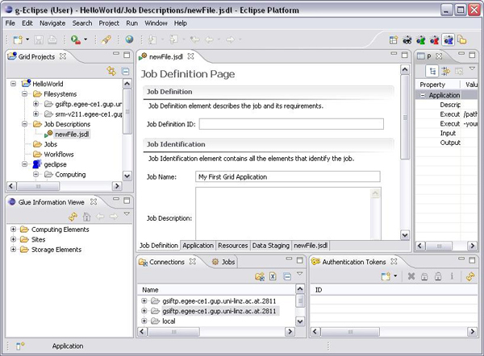
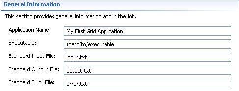

g-Eclipse - Editing a Job Description
After you have created a Job Description using the New Job Description
wizard, you may decide to apply some changes to it or even provide additional
information. Since editing the Job Description file manually is a time consuming
process requiring knowledge of the JSDL language, a JSDL editor is provided in
g-Eclipse to ease this task. The JSDL editor is the default editor and viewer
for JSDL files in the g-Eclipse framework. JSDL file have the *.jsdl extension.
Once you finish creating a new Job Description with the New Job Description
Wizard, the JSDL editor opens in the center workbench view and loads automatically
the newly created file.

The JSDL editor is a multi-page editor consisting of the following six pages/tabs:

- Overview Page: Provides general information about the job and also a general
description of what each editor page does.
- Job Definition Page:
Provides an interface for manipulating the job ID and also general requirements
of the job.
- Application Page: Provides an interface
for manipulating the application and its requirements.
- Data Staging Page: Provides an interface for defining the files that should
be moved to the execution host(stage in) before the job executes and the files
that should be moved from the execution host(stage out) after the job executes.
- Resources Page: Provides an interface for defining the resource requirements
of the job.
- Raw JSDL source: Provides a view of the JSDL raw source file.